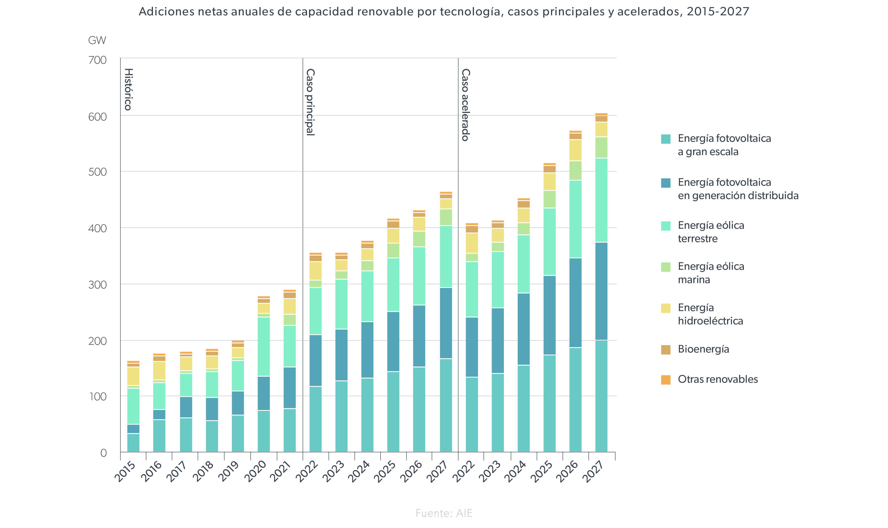
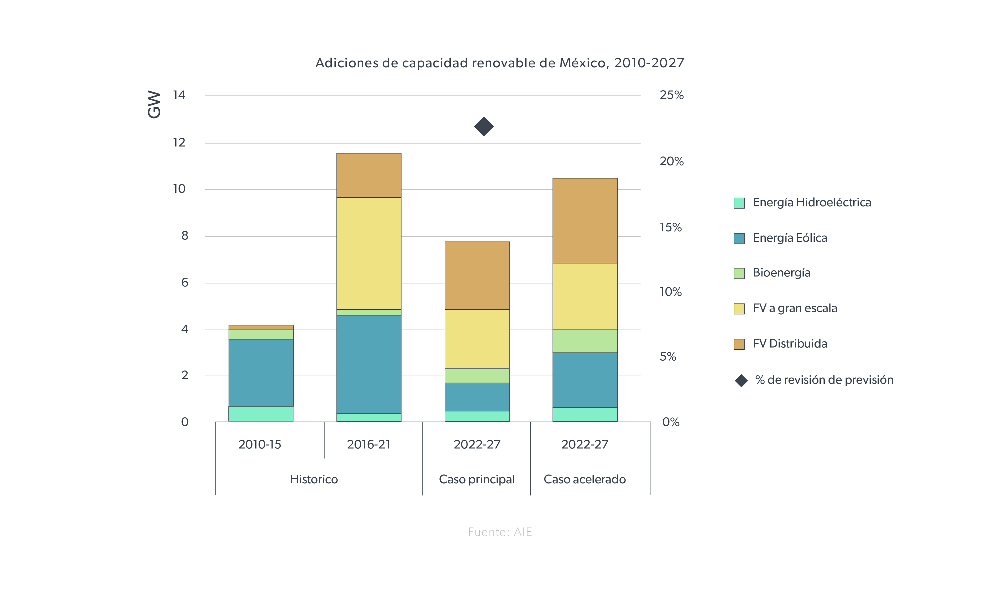
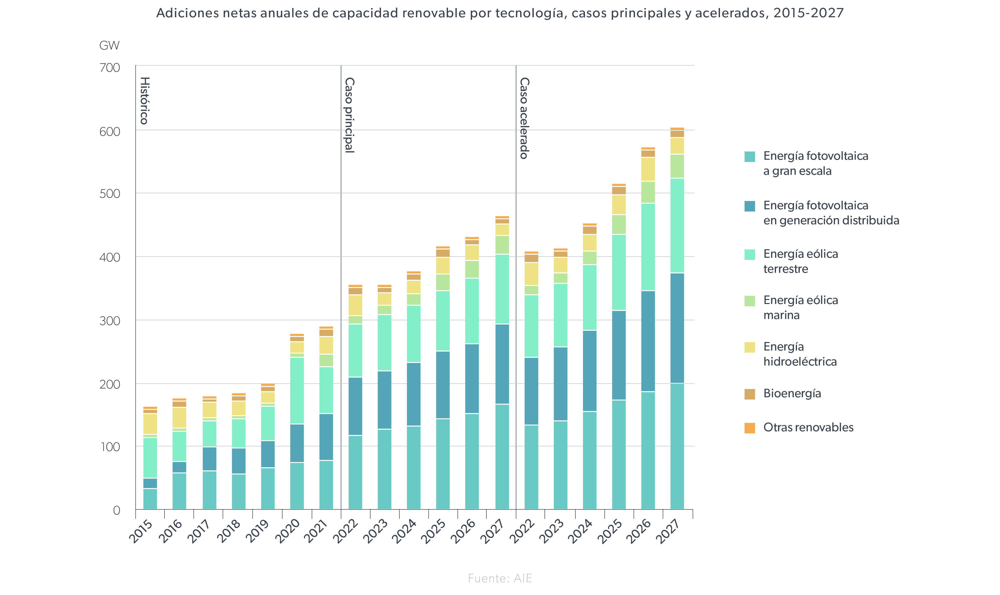
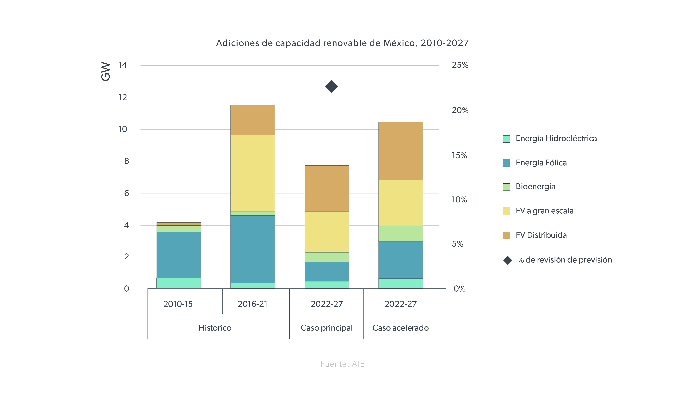

Vision A Futuro
En México, las tecnologías verdes se centran en transformar el país hacia un modelo
más sostenible y resiliente. Se espera que las tecnologías verdes desempeñen un papel
fundamental en la transición hacia una economía baja en carbono y en la mitigación de
los impactos del cambio climático. Se proyecta un aumento significativo en la inversión
en energías renovables, con el objetivo de reducir la dependencia de los combustibles
fósiles y alcanzar una mayor seguridad energética.
Además, se prevé una mayor adopción de prácticas de movilidad sostenible, con un
énfasis en la electrificación del transporte y el desarrollo de infraestructuras para
fomentar el uso de medios de transporte más limpios y eficientes. Se espera que el
gobierno y el sector privado impulsen la innovación en tecnologías de almacenamiento de
energía y en soluciones inteligentes para la gestión de la demanda, lo que contribuirá a
una red eléctrica más flexible y estable.
En el ámbito de la gestión de residuos, se espera una mayor implementación de
tecnologías de reciclaje y valorización de residuos, así como la expansión de programas
de economía circular que promuevan la reutilización de materiales y la reducción de desechos.
Asimismo, se proyecta un aumento en la adopción de prácticas de eficiencia energética en
diversos sectores, incluyendo la industria, el transporte y el sector residencial, lo que
contribuirá a una reducción significativa de las emisiones de gases de efecto invernadero
y a la conservación de recursos naturales.
Graficas
 



Situacion Actual
-
Energía renovable:
México ha estado invirtiendo en energías renovables, especialmente en energía solar y eólica. Se han desarrollado varios parques eólicos y plantas solares en diferentes regiones del país. El gobierno también ha implementado políticas para fomentar la inversión en este sector, incluyendo subastas de energía limpia.
-
Movilidad sostenible:
Se han implementado programas para promover el uso de transporte público y vehículos eléctricos. Algunas ciudades importantes como Ciudad de México están invirtiendo en infraestructura para bicicletas y transporte público eléctrico.
-
Gestión de residuos:
Se están adoptando tecnologías para el tratamiento de residuos sólidos, incluyendo la generación de energía a partir de residuos orgánicos y la implementación de sistemas de reciclaje más eficientes.
-
Eficiencia energética:
Hay un creciente interés en mejorar la eficiencia energética en edificios, industrias y en el sector público. Se están promoviendo programas de certificación y subsidios para fomentar la adopción de tecnologías y prácticas más eficientes.
-
Innovación y emprendimiento verde:
Existe un ecosistema emergente de startups y empresas enfocadas en tecnologías verdes en México. Se están desarrollando soluciones innovadoras en áreas como energía limpia, agricultura sostenible y conservación del agua.
-
Desafíos y obstáculos:
Aunque hay avances, México enfrenta desafíos significativos en la adopción de tecnologías verdes. Estos incluyen la falta de financiamiento, la resistencia de ciertos sectores industriales, la necesidad de una regulación más sólida y la falta de conciencia pública sobre la importancia de la sostenibilidad.